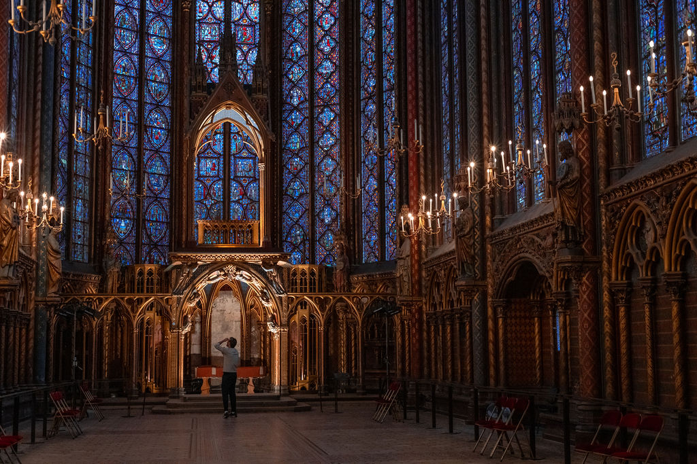

Name: Maryam Farooq
Roll Number: BSCS24053
Subject: Application of ICT
Visit Google
 Visit Gmail
Visit Gmail
- HTML
- CSS
- JavaScript
- Frontend Development
- Backend Development
- Full-Stack Development
My roll number is bscs24053.
A Place I want to Visit:
The place I want to visit is Paris.
Paris, often called the "City of Light," is famous for its rich cultural heritage and artistic legacy.
The city is home to iconic landmarks, including the Eiffel Tower, the Louvre Museum, and the Notre-Dame Cathedral.
Each of these sites attracts millions of visitors, showcasing Paris's historical significance and beauty.
Walking through the city, one can feel the layers of history that shape its vibrant atmosphere.
This blend of the old and new makes Paris a captivating destination for travelers.
The architectural landscape of Paris is a stunning showcase of diverse styles, from Gothic cathedrals to modern masterpieces.
The Sainte-Chapelle, with its breathtaking stained glass windows, stands as a testament to the city’s Gothic roots.
In contrast, the Centre Pompidou exemplifies contemporary design and innovation in art.
These structures not only serve as tourist attractions but also reflect the city's evolution over time.
For architecture enthusiasts, Paris is a treasure trove of inspiration and exploration.

Culinary experiences in Paris are another highlight that captivates visitors from around the world.
The city boasts a myriad of bistros, cafes, and Michelin-starred restaurants that showcase exquisite French cuisine.
Each meal is an opportunity to savor regional ingredients and traditional cooking methods.
Engaging in culinary tourism allows visitors to connect with local culture through food, enhancing their experience.
From cooking classes to wine tastings, the gastronomic offerings in Paris are truly unparalleled.
.jfif)
Paris’s vibrant neighborhoods, such as Montmartre and Le Marais, each have their own unique charm. Montmartre, with its bohemian past, is home to artists and musicians, giving it an artistic flair. Meanwhile, Le Marais offers a blend of historic architecture and trendy boutiques, attracting a diverse crowd. Exploring these quartiers provides insight into the everyday life of Parisians, beyond the typical tourist attractions. This neighborhood diversity adds depth to any visit, enriching the overall experience of the city.
In conclusion, Paris stands out as a multifaceted destination that offers a wealth of cultural, historical, and culinary experiences.
Its ability to seamlessly weave together a rich past with contemporary life ensures it remains a pivotal location for travelers.
The city invites exploration, discovery, and immersion in its beauty and vibrancy. For anyone seeking a blend of art, history, and gastronomy, Paris is an ideal choice.
The allure of the City of Light promises unforgettable memories and inspiration for years to come.